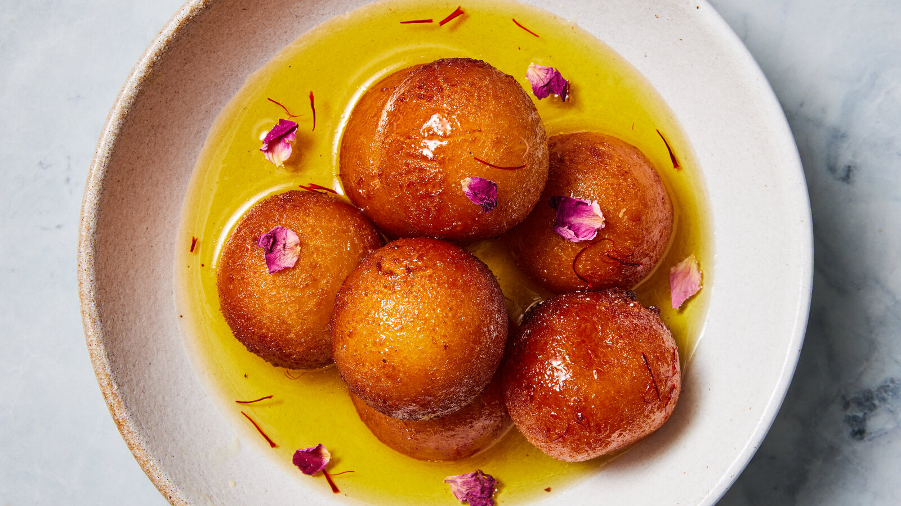

Gulab jamun is a traditional indian dessert and commonly available sweet in any indian restuarant everywhere. Usually many make them using ready mixes but they contain plain flour/wheat flour and Full fat Milk as well milk powder. They need to be deep fried in slow flame then put in Sugar syrup.
Meal prep time : 1 hour 5 minutes
Servings : 6